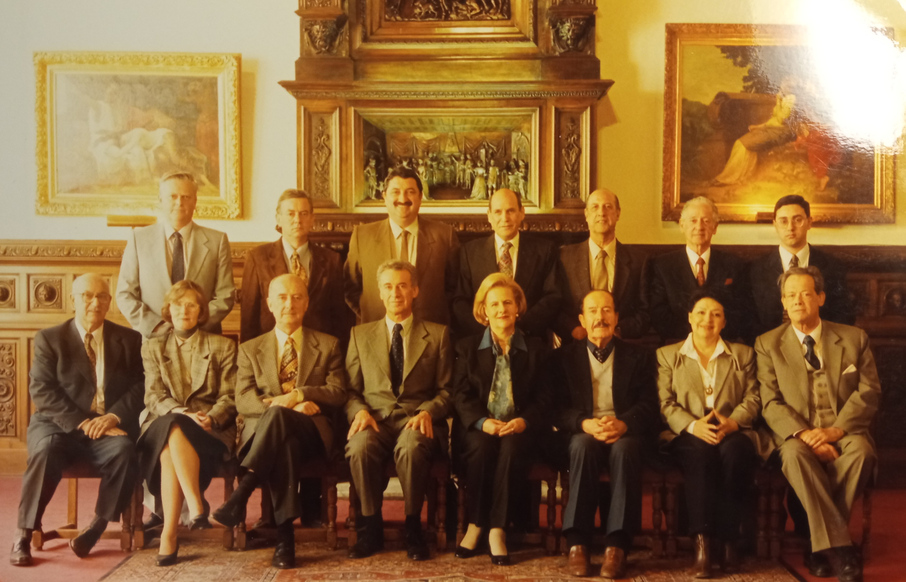

Terminó el gobierno de Sebastián Piñera, dejando su promesa cumplida: con el terreno formalmente destinado para su edificación; con una entidad propietaria; con un modelo de gestión y administración; con el proyecto de arquitectura financiado y concluido y con el financiamiento para su construcción. Sólo quedó como tarea no evitable su materialización, realizada por el gobierno posterior, de la presidenta Michelle Bachellet. Por esas cosas del destino, quienes no apoyaron el proyecto del teatro en su primer mandato, terminaron inaugurándolo.
Y así regresamos a nuestro primer capítulo, cerrando el círculo. Ahora se entienden las palabras de Juan Eduardo King que escribí al iniciar este libro cuando le volví a insistir que me contara por qué el Teatro Pencopolitano se llamaba Ahora Teatro Regional del Biobío y no tenía ánimo para responder, porque le desagradaba volver sobre algo a lo que dedicó parte significativa de su vida y que, debido a ciertos detalles de su gestión e historia, produce desazón y preocupación.
Es entendible su frustración. Este espacio fue construido para ser un polo de desarrollo cultural, turístico y económico, integrando múltiples aspectos que enriquecieran el entorno y atrajeran a diversos públicos. Algo que está lejos de ser aún, quizás porque la propuesta de la Corporación Teatro Pencopolitano para su modelo gestión perdió por un voto en las primeras reuniones del directorio del teatro regional, ganando la actual administración que tiene una política de “puertas cerradas” con unos pocos curadores que deciden quién se presenta o no en sus escenarios.
El proyecto original era “democrático, de puertas abiertas”. Incorporaba escuelas y talleres; una galería de arte abierta permanentemente al público; alianzas no sólo con universidades y municipios, sino con empresas colaboradoras a través de la corporación gestora; programas de voluntariado y participación comunitaria, cafetería y tienda de recuerdos, etc. Todo esto le daría vida al espacio, lo convertiría en un dinámico centro cultural que no sólo incrementaría el dinamismo de su entorno, sino que también fortalecería el tejido comunitario y cultural de la región. Llegué a la conclusión que, con pandemia o sin pandemia, el teatro regional y su entorno se ven siempre desolados. Como un "coloso dormido a las orillas del Biobío". De ahí el nombre de este libro: El Teatro Dormido.
Ni siquiera se respetó el nombre "Teatro Pencopolitano", sugerido por el destacado artista, escritor y docente Eduardo Meissner Grebe y respaldado por voluntad ciudadana durante tantas décadas. Claramente, no se cambió por originalidad. La razón que se esgrimió en su momento fue que se buscaba un nombre representativo de toda la región. Pero finalmente, ha sido una de las causas de que el nuevo teatro esté disociado de su memoria y, por lo tanto, desarraigado de la sociedad que lo concibió, perdiéndose el sentido de pertenecía de ese 96% de personas que quisieron la construcción del “Teatro Pencopolitano” durante 25 años y que hoy existe exclusivamente por su perseverante cruzada.
Comunidad que además no ha sido reconocida por las autoridades hasta la fecha. Peor aún, ha sido marginada de su propia historia. En el relato del Teatro Regional del Biobío, éste nace de la nada el año 2018. Como una callampa en el bosque después de la lluvia. Los líderes regionales esconden el origen de su nacimiento. Es más, lo niegan, como un hijo avergonzado de sus progenitores. Una reflexión que dejo con la esperanza que las nuevas generaciones recuperen lo propio. Las obras quedan y las personas pasan. El edificio estará ahí por muchas décadas para los artistas y el público a la espera de ser despertado para lo que fue construido: Un verdadero punto de encuentro, un centro neurálgico de la vida social, cultural y turística de la comunidad.

Directorio, Corporación Teatro Pencopolitano, 1997. Abajo, de izquierda a derecha: Dr. Carlos Martínez Gaensly, Annemarie Maack Möller, Carlos Von Plessing Baentsch, Juan Eduardo King Caldichoury, Mercedes Pujol Ramos, Tito Ansaldo Benvenuto, Alicia Estrada Roa, Eduardo Meissner Grebe. Arriba, de izquierda a derecha: Adriano Cecioni Raspi, Werner Stehr Wilckens, Marcelo Contreras Hauser, Carlos Bustamante Bonelli, Antonio Celis San Félix, Eduardo Zúñiga Ivani y Juan Carlos Martínez Aguayo.